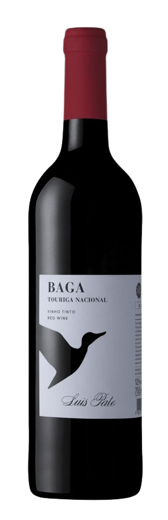

Tinto composto a partir de 60% Baga e 40% Touriga, sem passagem por madeira. Uma ótima versão desse tinto, que esbanja ameixa e amoras frescas escoltadas por notas florais, de ervas e de especiarias, tudo equilibrado por acidez vibrante e taninos tensos. Tem final suculento e persistente, com toques terrosos. Atenção com ele. Aqui menos é mais. Álcool 12%.
